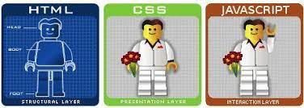

Javascript Fundamentals
HTML and CSS: Whats the deal?
In plain and simple terms. Html is your structure. Its the basic framework that makes up your page. While CSS brings the pretty. Lets look at it this way. If you are making a scary movie in a "Haunted House". HTML is the house itself. All boring and nothing special or scary about it. CSS is the set designer and set dresser that come in and and the cobwebs and the tattered curtains and the stains to up the fear factor.
Then to add to this metaphor you got a third piece to the puzzle, Javascript. Javascript are the special effects that are what interact with the actors. The light dusty old light that flickers, the creaky footsteps coming from the attic. The lightning and thunder that booms from outside the window.
All these are brought together to create a more immersive experience.
Flow and Loops:
Control flow is basically the particular way the programme proceeds. This is done in a predetermined manner. Unless however something arises which changes that. This is called a conditional structure or if/else statement. While driving to work "IF" there is a traffic jam ring your boss and tell him your going to be late "else" continue on your way.
Loops are slightly different. They use the statements, for-while and do-while. With these the programme is saying do this while this is still happening. You can look at it this way. If you are working in a factory on a conveyer belt.
Its your job to do your quality assurance checks on the stuff coming down the line while there is stuff being sent.
The DOM:
The DOM or Document Object Model. "The W3C Document Object Model (DOM) is a platform and language-neutral interface that allows programs and scripts to dynamically access and update the content, structure, and style of a document." This as stated is an extremely handy way to interface with the different elements you will use for your project and to particularly link your Javascript with it..Arrays vs Objects:
Arrays are a way to store multiple things into a single variable. Very handy when creating lists. Its away to easily obtain the information you need in
the shortest way. Objects represent things with characteristics or "properties."
Functions:
Functions are ways to single out, or define a "blocks" of code, you can then personalise it and reuse that to execute it as amny times as you want.
This comes in handy when working on projects with tousands of lines of code.